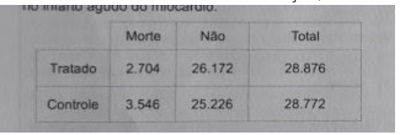
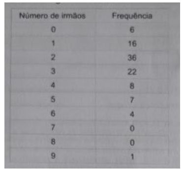

O abdome agudo representa uma situação em que muitas vezes é necessária a intervenção cirúrgica. Nessa condição clínica, o raio X simples de abdome:
RN é diagnosticado com sí lis congênita logo após o seu nascimento. A mãe não fez pré-natal e não sabe quem é o pai do RN. Qual é o tratamento de escolha para este RN?
As vasculites são doenças sistêmicas caracterizadas por in amação e necrose de vasos de qualquer calibre, na infância ou na adolescência, com consequente lesão tecidual. É exemplo de vasculite com acometimento predominantemente de vasos de grande calibre:
Menina de 11 anos, com processo inflamatório crônico nas articulações, autoimune, e com manifestações extra-articulares: nódulos subcutâneos, vasculite e insuficiência aórtica. Nesse caso, qual é o diagnóstico mais provável ?
A brose cística é uma doença monogênica autossômica recessiva, mais frequente em crianças. O exame com maior sensibilidade e maior especificidade para fazer o diagnóstico, nessa condição clínica, é:
A bronquiolite viral aguda é a infecção do trato respiratório inferior mais comum em crianças pequenas. Seu principal agente etiológico é:
Pai leva o lho ao pediatra com queixa de apatia e possível anemia. Após anamnese e exame físico, o pediatra solicita exame de pesquisa de sangue oculto nas fezes, pois suspeita que a criança esteja com sangramento no
Mãe chega com sua lha de três anos nos braços ao pronto-socorro. A criança está prostrada, com pele fria, pulsos quase imperceptíveis, com bradicardia e frequência respiratória aumentada. Depois de fazer o diagnóstico, o pediatra adota o plano terapêutico adequado para este tipo de desidratação, que é o plano
Mãe chega com sua lha de três anos nos braços ao pronto-socorro. A criança está prostrada, com pele fria, pulsos quase imperceptíveis, com bradicardia e frequência respiratória aumentada. O pediatra avalia a criança e constata tratar-se de desidratação de grau.
Quais são os locais em que ocorrem, com maior frequência, afogamentos de crianças entre um e quatro anos?
Mãe de 30 anos, GI P0 A0, com pré-natal sem intercorrências, com sorologias sem alterações e ultrassonogra a morfológica normal, evolui em trabalho de parto normal e dá à luz um recém-nascido (RN) do sexo masculino, com boletim de APGAR 9 e 10; porém, o RN evolui com desconforto respiratório progressivo e, ao exame físico, além da taquipneia, observam-se pele espessa e descamativa, ectrópio, eclábio e pletora clínica. Qual é a mais provável patologia deste RN?
Multípara, com 38 semanas de gestação, com óbito fetal intrauterino sem causa aparente, tem indução do trabalho de parto misoprostol. Durante o trabalho de parto, apresenta dinâmica uterina de cinco contrações/10 minutos, com duração de 60", seguindo-se anel de Bandel, dor aguda, intensa, associada a sangramento transvaginal. Diante do quadro descrito, a hipótese diagnóstica mais provável é:
Uma gestante com 16 semanas de gestação apresenta queixas de corrimento com prurido e ardência ao urinar. Ao exame, verificam-se hiperemia focal em paredes vaginais e colo, corrimento amarelado, bolhoso, com odor fétido e ta de pH > 5. Diante do quadro, a hipótese diagnóstica e o tratamento devem ser, respectivamente:
Das malformações uterinas, a que tem pior prognóstico obstétrico, se não corrigida, é o útero
Na pré-eclâmpsia há um defeito na placentação, que leva ao stress oxidativo, que é o início de todo processo fisiopatológico da doença. Esse defeito é caracterizado pela
Uma gestante de 24 anos, com 22 semanas de gestação, cartão vacinal completo com todos os reforços realizados, vai viajar para região amazônica a trabalho. Nesta situação, o esquema vacinal deverá ser:
Mulher de 40 anos chega ao pronto-socorro com queixa de dor hipogástrica iniciada logo após a menstruação, associada a corrimento fétido e dispareunia profunda. Ao exame físico, verifica-se colo com muco turvo, sangramento ao toque e dor à mobilização do colo e anexos. A ultrassonogra a mostra imagem em topogra a de anexo direito, anecóica, com debris em seu interior e maior diâmetro de 4,0 cm. Diante deste quadro, a hipótese diagnóstica e o tratamento inicial são, respectivamente:
Uma mulher de 32 anos, que apresenta colpocitologia oncoparasitária com alterações escamosas de caráter incerto (ASC- US), deve ser submetida à
Para uma adolescente com queixas de acne e hirsutismo discreto, com necessidade contraceptiva, a melhor opção contraceptiva via oral é
Mulher climatérica, de 46 anos, com história de ciclos irregulares quanto aos intervalos, aumento do uxo durante a menstruação, com dismenorreia secundária, apresenta à ultrassonogra a mioma intramural, com maior diâmetro de 2,0 cm. Qual é o provável diagnóstico?
Gestante com 12 semanas aparece com lesão ulcerada, de +/- 1,0 cm, com bordas lisas, base endurecida, centro limpo e indolor, entre grandes e pequenos lábios genitais. Diante deste quadro, a hipótese diagnóstica é:
Ao se dividir o número de óbitos de crianças de 28 dias até um ano de idade, no período, pelo número de nascidos vivos, nesse período, é possível obter o resultado do coeficiente de
É uma característica da prevenção quaternária:
Um relacionamento adequado entre o médico e a pessoa atendida é um desa o importante na prática da medicina de família e comunidade. É uma atitude do médico que favorece a redução nas dificuldades desse relacionamento:
Leia a seguir o diálogo entre o médico de família e comunidade (MFC) e sua paciente. MFC: Bom dia, dona Cleide, como a senhora está passando? Paciente: Olha, doutor, eu me sinto melhor dos sintomas da menopausa, mas sabe o que é? Não tenho dormido bem, ando esquecida, vivo suspirando... MFC: Bem, dona Cleide, se está melhor dos sintomas da menopausa, que outras questões estão lhe tirando o sono e causando suspiros? Paciente: Pois é, doutor, coisas da vida: lhos, marido, a violência que nos cerca. MFC: Então, vamos falar sobre cada uma dessas questões. Qual componente do método clínico centrado na pessoa preponderou no diálogo apresentado?
Segundo a Política Nacional de Atenção Básica do Brasil (2017).
Segundo o Guia de Vigilância em Saúde de 2019, pacientes que apresentem exantema maculopapular pruriginoso, acompanhado de um dos seguintes sinais e sintomas: febre; hiperemia conjuntival; artralgia ou poliartralgia; edema periarticular preenchem os critérios clínicos de definição de caso suspeito de
A proporção de acertos de um teste diagnóstico é denominada:
Considere um ensaio clínico que avaliou o efeito da trombólise intravenosa sobre a mortalidade de cinco semanas no infarto agudo do miocárdio. Com relação aos resultados das medidas do tamanho do efeito da intervenção.

As complicações cirúrgicas podem ser, em sua maioria, evitadas com bons cuidados pré-operatórios. Em relação ás complicações pós-operatórias.
Em uma avaliação de 100 estudantes universitários, foram encontrados os seguintes resultados: O valor modal do número de irmãos é:

Considerando que haja estabilidade de incidência de uma doença, que seu coe ciente de incidência seja de 20 por 1000 e seu coe ciente de mortalidade, de 10 por 1000, em um dado período, qual é o coe ciente de letalidade dessa doença, para esse mesmo período?
Revisar: possível letra faltando em enunciado
Mulher de 27 anos apresenta eritema na região malar e no dorso do nariz, acompanhado de edema local e piora com exposição solar. Refere a presença concomitantemente de artrite das mãos, pés, joelhos e tornozelos, febre não aferida, fadiga generalizada e poliadenopatias. Relata que este quadro se iniciou há oito meses, e está piorando progressivamente. Há uma semana, vem apresentando edema dos membros inferiores e oligúria. Os exames laboratoriais mostram os seguintes resultados: Hemograma: anemia e leucopenia; VHS = 90 mm; eletroforese de proteínas: aumento policlonal de gamaglobulinas; FAN: padrão nuclear homogêneo, título > 1:640; C3 e C4 diminuídos; VDRL negativo; sorologias virais (HBV, HCV, HIV): negativas. Considerando a principal hipótese diagnóstica para esta paciente, a forma mais comum e mais grave de acometimento renal é glomerulonefrite
Paciente de 67 anos, do sexo masculino, tabagista há 52 anos, fuma cerca de 40 cigarros por dia. De acordo com o teste de Fagerstrom, apresentou pontuação total de 6. Durante avaliação na consulta, o paciente foi orientado quanto aos malefícios do tabagismo, sendo-lhe explicadas as possibilidades de cessar o tabagismo. O paciente sabe dos riscos do tabagismo e quer para de fumar, mas ainda não se sente preparado. Qual é o tratamento adequado para esse paciente?
Paciente de 67 anos, do sexo masculino, tabagista há 52 anos, fuma cerca de 40 cigarros por dia. De acordo com o teste de Fagerstrom, apresentou pontuação total de 6. Durante avaliação na consulta, o paciente foi orientado quanto aos malefícios do tabagismo, sendo-lhe explicadas as possibilidades de cessar o tabagismo. O paciente sabe dos riscos do tabagismo e quer para de fumar, mas ainda não se sente preparado. Conforme a diretriz para cessação do tabagismo, de 2008, qual é o grau de motivação
Na análise liquórica das meningites bacterianas, qual dos seguintes achados é esperado?
Homem, de 60 anos, tabagista e com diagnóstico de diabetes e hipertensão arterial há mais de quinze anos. Em uso de anlodipino, 10 mg/dia, e metformina 850 mg, duas vezes ao dia. Os exames médicos por ele realizados, durante essa avaliação, evidenciaram os seguintes resultados: albuminúria = 200 mg/24horas; creatina sérica = 1,8 mg/dL (clearence de creatina CKD-EPI = 40 mL/min/1.73m²); potássio sérico = 4,8 mEq/L e hemoglobina glicosilada = 7,5%. Nesse caso clínico,
No paciente politraumatizado com hemorragia, qual medicação pode reduzir a mortalidade se iniciada precocemente na assistência ao paciente?
Durante a avaliação pré-nupcial, uma paciente realizou a pesquisa de marcadores séricos para hepatite B, e o único marcador sorológico positivo foi o anticorpo Anti-HBs. Qual é o significado clínico deste achado?
Mulher de 26 anos, com diagnóstico de diabetes mellitus tipo 1 há 15 anos, apresentou, na última consulta, hemoglobina glicada na faixa de 7,8%. Durante o atendimento, manisfestou desejo de engravidar. Visando diminuir o risco de anomalia congênitas, foi aconselhada pelo endocrinologista a melhorar o controle glicêmico, mantendo sua glicemia mais próxima possível do normal, antes de engravidar (idealmente uma hemoglobina glicada < 6,5%). De acordo com associação americana de diabetes, Guideline 2019, quais os valores de glicemia recomendados para essa paciente, durante a gravidez?
Quais são as principais etiologias da insuficiência cardíaca com fração de ejeção reduzida, no Brasil?
Qual é a maior proteína encontrada no coração de mamíferos?
A avaliação do homem infértil inclui um exame manual detalhado do escroto e de seu conteúdo. Assim, no exame físico escrotal, podem ser detectadas anormalidades que justi quem a ultrassonogra a escrotal para uma investigação mais aprofundada. A ultrassonografia com doppler em cores pode demonstrar a presença de varicocele.
Nas anastomoses realizadas após ressecções sobre o cólon e o reto, quanto às deiscências e fístulas:
O derrame pleural, popularmente conhecido como ""água na pleura"" ou ""água no pulmão"", é o nome dado ao acúmulo anormal de líquidos na cavidade pleural. De acordo com a composição química do líquido, pode ser de dois tipos: transudato e exsudato. Em qual das patologias abaixo, o derrame pleural é do tipo transudato?
A síndrome ou doença de Barlow está associada com a seguinte valva do coração:
Paciente de 37 anos, vítima de sequela de queimadura com retração cicatricial grave no pescoço. Após discussão, a equipe de cirurgia plástica optou por fazer enxerto de pele na região cervical para o tratamento.
O choque possui várias causas, entre elas a hipovolemia. No choque com perdas volêmicas superiores a 15%.
Paciente do sexo feminino, de 55 anos, com edema venoso crônico, foi tratada com terapia compressiva por nove meses, com boa resolução dos sintomas. A avaliação com ecodoppler confirmou uma incompetência do sistema venoso profundo, porém ela possui uma veia safena interna patente e competente. Ela usa meia compressiva e eleva as pernas três vezes ao dia, porém houve piora do edema no último mês. Um novo ecodoppler dos membros inferiores descartou trombose venosa profunda. Com base nesses dados, a conduta mais adequada é:
Tratamento Cirúrgico Aberto da OAA Secundária à Embolia Arterial Paciente de 52 anos procura o pronto-socorro com quadro de dor excruciante no membro inferior direito, de início súbito, há duas horas. Relata fazer tratamento para hipertensão e arritmia cardíaca. Ao exame clínico, apresenta membro inferior direito pálido, com temperatura diminuída e sem pulsos presentes. Diante do quadro descrito, a próxima conduta é: Respostas: 1 12 23 34 45